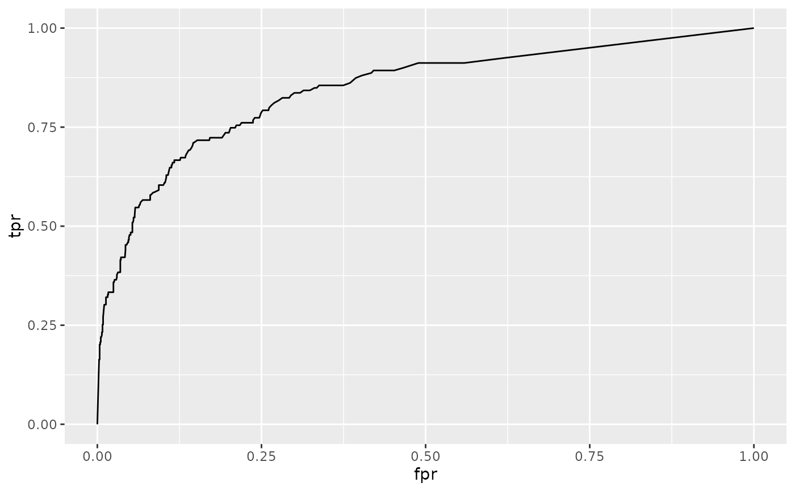

Tidy summarizes information about the components of a model. A model component might be a single term in a regression, a single hypothesis, a cluster, or a class. Exactly what tidy considers to be a model component varies across models but is usually self-evident. If a model has several distinct types of components, you will need to specify which components to return.
# S3 method for roc
tidy(x, ...)An roc object returned from a call to AUC::roc().
Additional arguments. Not used. Needed to match generic
signature only. Cautionary note: Misspelled arguments will be
absorbed in ..., where they will be ignored. If the misspelled
argument has a default value, the default value will be used.
For example, if you pass conf.lvel = 0.9, all computation will
proceed using conf.level = 0.95. Additionally, if you pass
newdata = my_tibble to an augment() method that does not
accept a newdata argument, it will use the default value for
the data argument.
A tibble::tibble() with columns:
The cutoff used for classification. Observations with predicted probabilities above this value were assigned class 1, and observations with predicted probabilities below this value were assigned class 0.
False positive rate.
The true positive rate at the given cutoff.
if (requireNamespace("AUC", quietly = TRUE)) {
library(AUC)
data(churn)
r <- roc(churn$predictions, churn$labels)
td <- tidy(r)
td
library(ggplot2)
ggplot(td, aes(fpr, tpr)) +
geom_line()
# compare the ROC curves for two prediction algorithms
library(dplyr)
library(tidyr)
rocs <- churn %>%
pivot_longer(contains("predictions"),
names_to = "algorithm",
values_to = "value"
) %>%
nest(data = -algorithm) %>%
mutate(tidy_roc = purrr::map(data, ~ tidy(roc(.x$value, .x$labels)))) %>%
unnest(tidy_roc)
ggplot(rocs, aes(fpr, tpr, color = algorithm)) +
geom_line()
}
#> AUC 0.3.0
#> Type AUCNews() to see the change log and ?AUC to get an overview.
#>
#> Attaching package: ‘AUC’
#> The following objects are masked from ‘package:caret’:
#>
#> sensitivity, specificity
